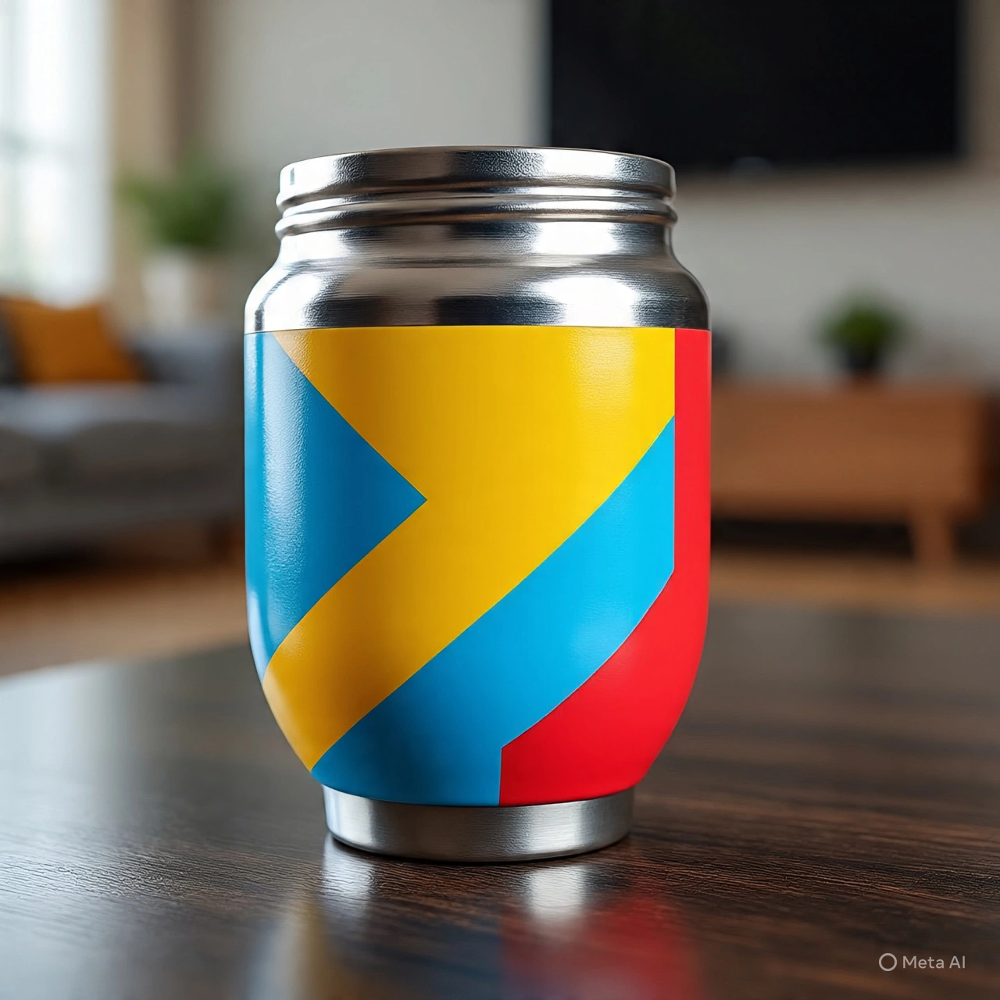

Mates de calabaza curados artesanalmente, perfectos para los amantes de la tradición. Cada uno único y especial.
Ver ColecciónTallados en maderas nobles argentinas con diseños únicos. Resistentes y con un sabor incomparable.
Ver Colección
Diseños contemporáneos que fusionan tradición e innovación. Perfectos para el mate urbano y moderno.
Ver ColecciónDesde 1950, nuestra familia se dedica a la elaboración artesanal de mates. Cada pieza es trabajada con amor y dedicación, manteniendo vivas las técnicas ancestrales transmitidas de generación en generación.
Conocer MásSeleccionamos cuidadosamente cada calabaza y madera para crear mates únicos. Nuestro proceso artesanal garantiza la máxima calidad y durabilidad en cada producto.
Ver ProcesoEl mejor mate que probé. La calidad es excepcional y el sabor, incomparable.
Excelente atención y productos de primera. Mi mate de madera es una obra de arte funcional.
Tradición y calidad en cada sorbo. Mateando es mi lugar de confianza para comprar mates.